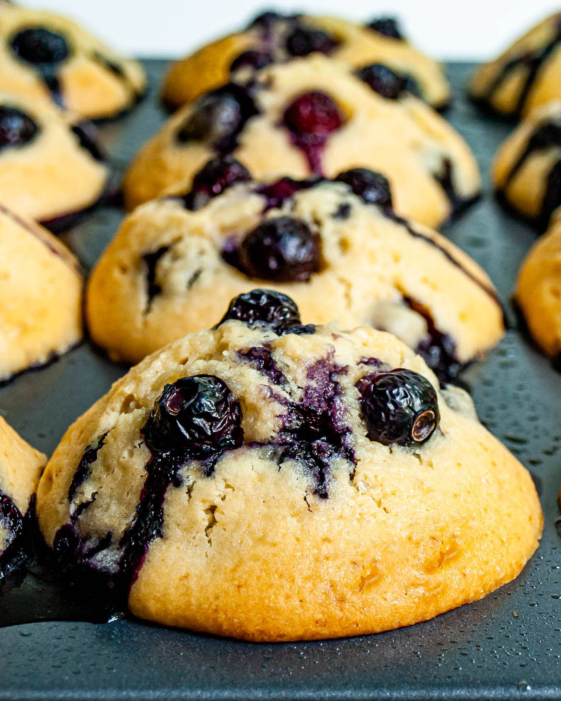

Blueberry Muffins

Description
Last summer, I set out to create the perfect blueberry muffin. After countless hours in the kitchen, I finally came up with the following recipe. These muffins are moist, flavorful, and honestly, life-changing. Enjoy.
Ingredients
- 2 cups fresh blueberries
- 1 cup sugar
- 1 tsp lemon zest
- 1 cup buttermilk
- 2 tsp vanilla
- 2 eggs
- 2.5 cups flour
- 3 tsp baking powder
- 1 tsp baking soda
- 1/4 tsp salt
- 4 tbsp veggie oil
- 4 tbsp butter, melted
- some coarse sugar for topping
Steps
- Preheat oven to 400.
- Whisk together dry ingredients.
- In a separate bowl, whisk together the wet ingredients with the lemon zest.
- Toss blueberries in a couple spoonfuls of flour mixture and set aside.
- Make a small well in the dry mix and pour in the wet mix. Mix until JUST combined. Some lumps are fine.
- Fold in the blueberries.
- Fill muffin cups and top with a sprinkle of coarse sugar.
- Bake in the oven for 15-20 min, or until a skewer inserted comes out clean.